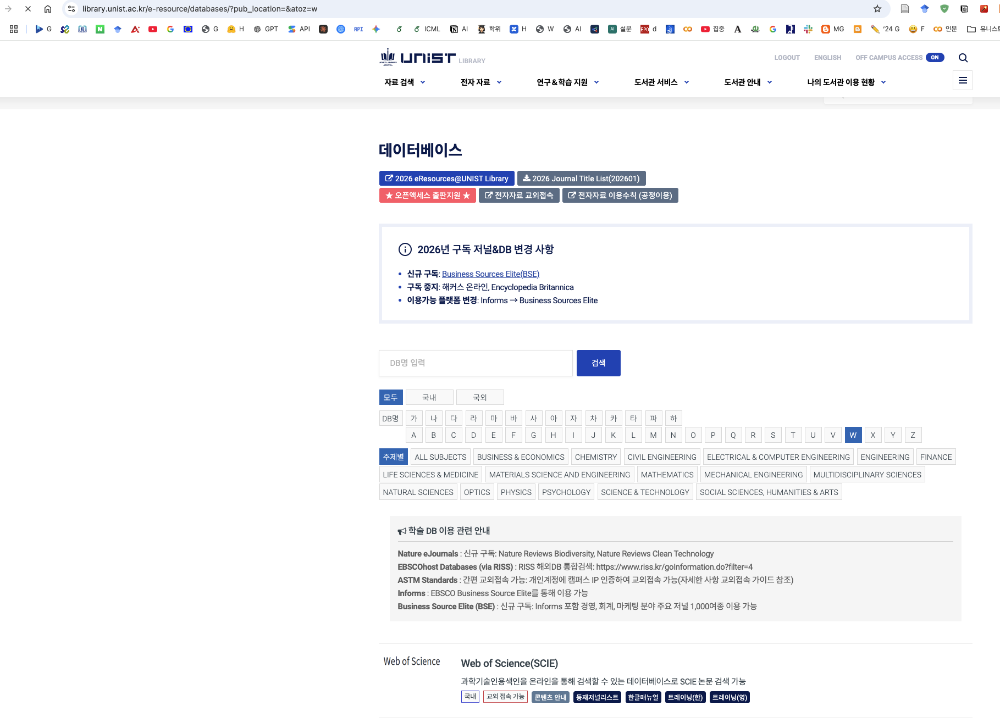
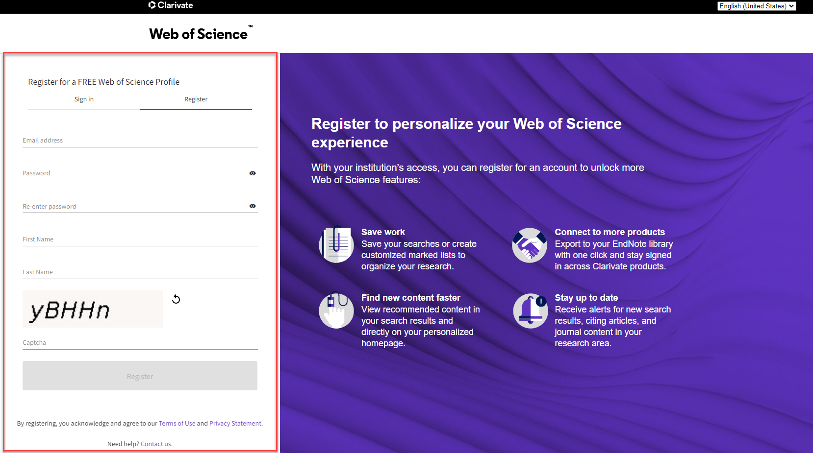
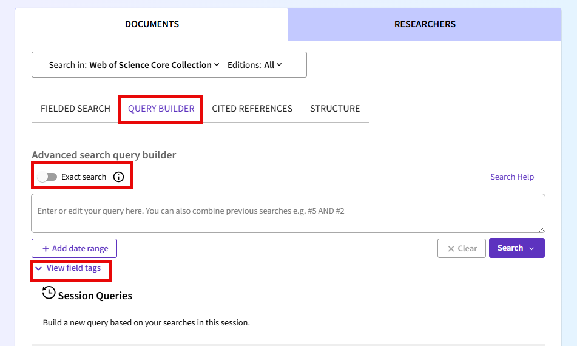
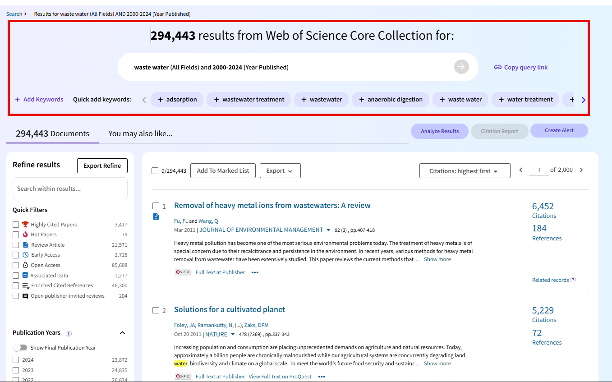
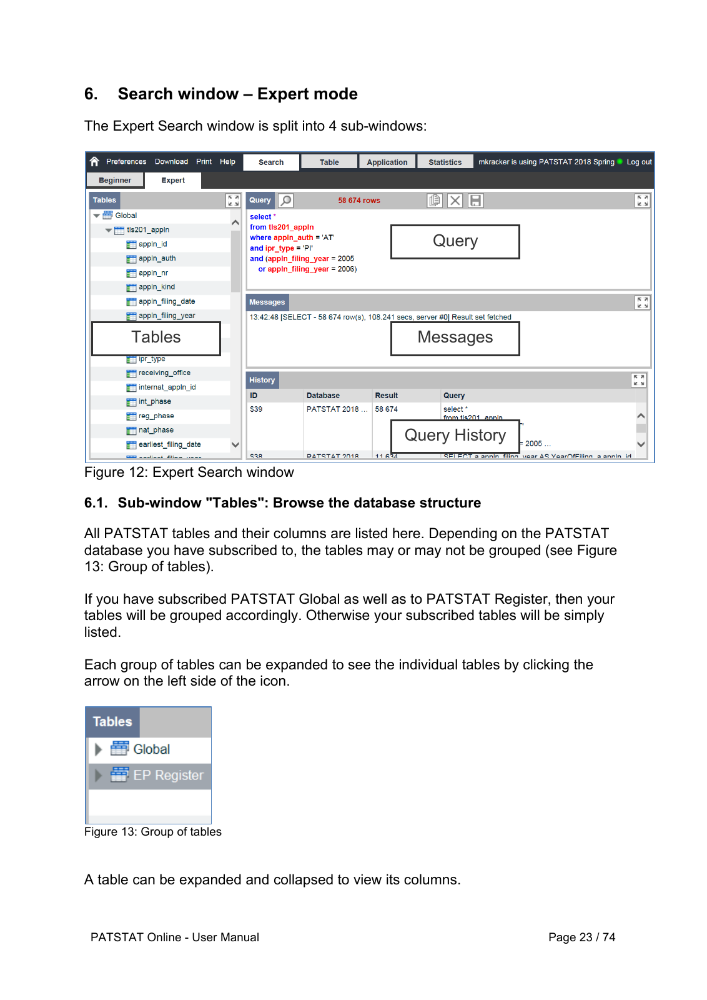
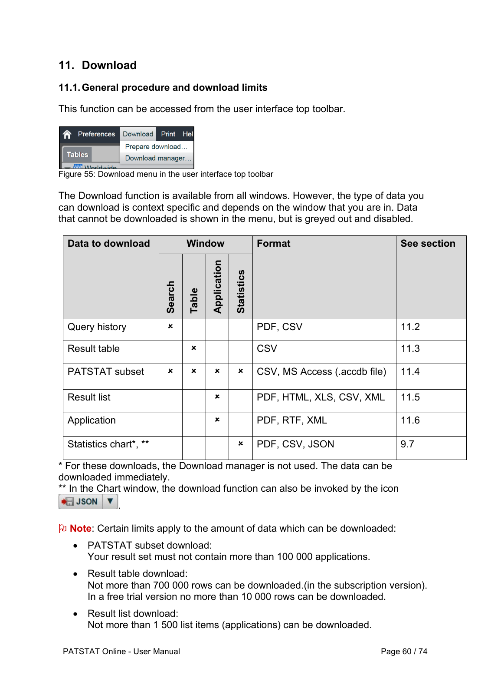

AI 논문·특허 데이터 수집
English · 한국어
TIM51001 · 데이터 수집 및 분석
Codex를 이용해 인공지능 논문과 특허 데이터를 수집합니다. 아래 두 실습은 검색 결과 파일과 수집 기록을 저장하는 단계까지 다룹니다. 통계 분석과 논문 원문 수집은 포함하지 않습니다.
이용 가능한 데이터와 내려받기 한도는 소속 기관의 구독 범위와 계정 권한에 따라 다릅니다.
1. Web of Science 논문 수집 · 2. EPO PATSTAT 특허 수집
1. Web of Science에서 AI 논문 수집하기
UNIST 도서관 접속과 계정 생성
UNIST 학생은 도서관을 통해 Web of Science에 접속할 수 있습니다. 도서관의 기관 인증을 거치면 구독 자료를 이용할 수 있습니다. Web of Science 개인 계정은 검색식 저장 등에 사용하며, 무료 개인 계정만으로 유료 데이터베이스를 이용할 수는 없습니다.
- UNIST 도서관에 접속해 UNIST 계정으로 로그인합니다.
- 전자 자료 → 데이터베이스로 이동합니다. W로 시작하는 데이터베이스 목록을 바로 열어도 됩니다.
- 교외에서는 도서관의 전자자료 교외접속 안내에 따라 인증합니다. 아래 화면에서는 오른쪽 위 OFF CAMPUS ACCESS가 ON입니다. 활성화되지 않았다면 먼저 도서관의 인증 절차를 완료합니다.
- 알파벳 목록에서 W를 선택하거나 DB명 검색창에 Web of Science를 입력합니다. 검색 결과에서 Web of Science(SCIE) 링크를 엽니다.
- 기관 인증이 유지되도록 도서관 링크를 통해 Web of Science로 이동합니다. Web of Science Core Collection과 연구에 필요한 색인을 사용할 수 있는지 확인합니다. 접속이 거부되면 교외접속 안내를 다시 확인하거나 도서관에 문의합니다.
{kind=link}

Web of Science에서 Register를 선택하고 이메일, 이름, 비밀번호를 입력한 뒤 인증을 완료합니다. 이메일로 받은 링크를 통해 계정을 활성화합니다. 로그인하면 검색식을 저장할 수 있습니다. 비밀번호 입력과 계정 인증은 직접 완료한 다음 Codex에 브라우저 작업을 요청합니다. Clarivate 계정 생성 안내.
{kind=link}

선행연구에서 검색 키워드 찾기
Liu, Shapira와 Yue (2021)의 Tracking developments in artificial intelligence research를 출발점으로 삼습니다. 이 연구는 기준 논문, 키워드 수정, 학문 분야 검색을 함께 사용합니다. 연구방법과 키워드 표를 읽고 Codex에 검색식 작성을 요청합니다. 아래 예시는 수업용으로 단순화한 것으로, 해당 논문의 검증된 검색 전략을 그대로 재현한 것은 아닙니다.
- 수집 범위를 정합니다. 여기서는 2020~2025년 AI 관련 논문을 대상으로 합니다. AI 응용 연구와 학술대회 논문을 포함할지도 결정합니다.
- 관련 선행연구 2~3편에서 후보 검색어를 추출합니다. 각 검색어의 DOI 또는 URL, 표·쪽 번호, 포함 이유를 기록합니다.
- 동의어는
OR로 연결합니다. AI 논문 중 특정 주제로 범위를 좁힐 때AND를 사용합니다. 다른 뜻으로 쓰일 수 있는 약어AI는 단독 검색어로 쓰지 않습니다. - 이미 알고 있는 관련 논문이 검색되는지 확인하고, 결과 30~50건의 제목과 초록을 읽습니다. 빠진 논문과 무관한 결과를 기록하고 전체 수집 전에 검색식을 수정합니다.
| 구분 | 후보 검색어 | 기록할 내용 |
|---|---|---|
| AI 핵심 개념 | artificial intelligence | Liu 등의 연구에서 논의한 개념과 정확한 출처 위치를 기록합니다. |
| 학습 방법 | machine learning, deep learning, neural network, support vector machine | 선행연구에서 정의와 표현의 변형을 확인합니다. |
| 기능 | natural language processing, computer vision | 해당 기능 전체를 포함할지, 학습 기반 연구만 포함할지 정합니다. |
| 최근 개념 확장 | generative AI, large language model | 최근 연구에 근거해 추가합니다. 2021년 논문에서 가져온 용어로 표시하지 않습니다. |
검색식 작성 전에 Codex에 다음과 같이 요청합니다.
내가 제공한 논문의 연구방법과 검색어 표를 읽어줘.
검색어, 동의어, 출처 DOI/URL, 쪽·표 번호, 포함 이유를 표로 정리해줘.
뜻이 모호한 검색어는 따로 표시해줘.
출처를 만들거나 최근 용어를 과거 논문에서 가져온 것으로 표시하지 마.
내가 승인한 검색어만 이용해 2020~2025년 AI 논문을 찾는
Web of Science Core Collection 검색식을 작성해줘.검색식 작성과 결과 확인
Advanced Search → Query Builder를 엽니다. 아래에서 TS는 제목, 초록, 저자 키워드, Keywords Plus 등의 Topic 필드를 검색하며, PY는 출판연도입니다. 선택한 인용 색인과 문서 유형을 기록합니다. 학술대회 논문의 포함 범위는 구독 색인에 따라 달라집니다. Query Builder 안내.
TS=("artificial intelligence" OR "machine learning"
OR "deep learning" OR "neural network*"
OR "support vector machine*"
OR "natural language processing" OR "computer vision")
AND PY=(2020-2025)처음에는 연도 범위를 1년으로 좁혀 내려받기를 시험합니다. 검색식과 저장 필드를 확인한 뒤 범위를 넓힙니다. 연구 범위에 맞게 검색어를 보완합니다. 이 검색식만으로 모든 AI 논문이 검색되지는 않습니다.
{kind=link}

Codex로 검색 결과 나누어 수집하기
여기서 브라우저를 이용한 수집은 인증된 세션에서 Codex가 검색과 내보내기 기능을 조작하는 방식입니다. 계획한 수집량에 대해 자동화가 허용되는지 도서관에 확인합니다. 제공되는 내보내기 기능을 우선 사용합니다. 논문 정보 저장은 논문 PDF 다운로드와 다릅니다.
검색 결과에서 Export를 선택하고 일반 텍스트 또는 탭 구분 텍스트 등을 고릅니다. 이용 권한 내에서 필요한 필드를 최대한 포함하고, 필요하면 인용문헌도 선택합니다. 소량을 먼저 저장해 고유 식별자, 제목, 초록, 키워드가 있는지 확인합니다. 한 번에 내보낼 수 있는 건수는 실제 대화창의 제한을 따릅니다. Fast 5000은 포함하는 필드가 더 적습니다. 내보내기 안내.
{kind=link}

기관 이용 조건에서 허용된 수집임을 확인했어.
인증된 Web of Science 브라우저 세션에서 승인한 AI 검색식을 실행해줘.
검색식, 색인, 필터, 검색일, 결과 건수, 저장 필드를 collection_log.json에 기록해줘.
소량을 먼저 내려받아 필요한 필드가 있는지 확인해줘.
화면에 표시된 제한 안에서 겹치지 않는 범위를 순서대로 내보내고,
data/wos/raw/에 번호를 붙여 저장해줘. 원본 파일은 수정하지 마.
완료한 범위, 행 수, 파일 체크섬을 기록해 중단 후 이어서 수집할 수 있게 해줘.
식별자 누락, 중복 accession ID, 검색 건수와 고유 수집 건수의 차이를 보고해줘.
로그인 확인, 접근 거부, 다운로드 제한이 나오면 중단해줘.
제한을 우회하거나 인증 정보를 추출하거나 출판사 PDF를 수집하지 마.원본 파일, 최종 검색식, 키워드 표, 수집 기록을 남깁니다. Web of Science accession ID의 고유 건수를 검색 결과 건수와 비교합니다. DOI는 보조 식별자로 활용하되 없는 경우도 있습니다. 건수 차이를 확인하기 전에는 수집 완료로 판단하지 않습니다.
2. EPO PATSTAT에서 AI 특허 수집하기
계정 생성과 데이터베이스 판본 선택
EPO PATSTAT 안내에서 시작합니다. 이 실습은 구독형 SQL 인터페이스인 PATSTAT Online을 사용합니다. EPO는 무료 Technology Intelligence Platform(TIP)에서도 PATSTAT을 제공하지만 이용 절차는 다릅니다.
처음 이용한다면 Free trial에서 등록 정보 입력과 인증을 직접 완료하고 받은 안내에 따라 접속합니다. PATSTAT Global을 선택하고 세션에 표시된 판본을 기록합니다. 체험 계정에는 내보내기 제한이 있으며, 계정 생성만으로 제한 없는 이용 권한이 생기지는 않습니다.

선행연구의 정의를 특허 검색 조건으로 바꾸기
WIPO Technology Trends 2019: Artificial Intelligence와 검색 방법론을 참고합니다. WIPO는 AI 기법, 기능적 응용, 적용 분야를 구분하고 키워드와 분류 정보를 함께 사용합니다. 논문 검색식을 그대로 복사하지 말고 특허용 키워드 표를 별도로 작성합니다.
제목·초록에서 찾을 검색어와 IPC/CPC 분류 코드를 구분합니다. 코드는 분류체계와 사용 판본에서 확인합니다. 예를 들어 G06N으로 추가 후보를 찾을 수 있지만, 이 코드가 모든 AI 특허와 같거나 연구 범위에 해당하는 특허만 포함하는 것은 아닙니다. 키워드만 쓸지, 키워드 OR 코드 또는 키워드 AND 코드를 쓸지 기록합니다. 조합에 따라 수집 대상이 달라집니다.
아래 SQL은 영문 제목·초록 검색을 시험하는 예시이며 WIPO 검색 전략 전체를 구현한 것이 아닙니다. 영문 텍스트가 없는 특허는 검색에서 빠질 수 있습니다. 출원연도는 우선권연도·공개연도와 다르므로 의도에 맞게 선택합니다. 최근 출원은 공개와 색인 지연 때문에 불완전할 수 있습니다.
범위를 제한한 SQL 작성과 실행
Search → Expert를 엽니다. tls201_appln의 appln_id는 출원 식별자이며 docdb_family_id는 관련 출원을 묶는 특허 패밀리 식별자입니다. 제목은 tls202_appln_title, 초록은 tls203_appln_abstr에 있습니다. 사용 판본의 데이터 설명서에서 필드를 확인합니다.
SELECT TOP 100
a.appln_id,
a.docdb_family_id,
a.appln_auth,
a.appln_nr,
a.appln_filing_date,
a.appln_filing_year,
t.appln_title,
b.appln_abstract
FROM tls201_appln AS a
LEFT JOIN tls202_appln_title AS t
ON t.appln_id = a.appln_id
AND t.appln_title_lg = 'en'
LEFT JOIN tls203_appln_abstr AS b
ON b.appln_id = a.appln_id
AND b.appln_abstract_lg = 'en'
WHERE a.appln_filing_year = 2020
AND (
LOWER(t.appln_title) LIKE '%artificial intelligence%'
OR LOWER(b.appln_abstract) LIKE '%artificial intelligence%'
OR LOWER(t.appln_title) LIKE '%machine learning%'
OR LOWER(b.appln_abstract) LIKE '%machine learning%'
OR LOWER(t.appln_title) LIKE '%deep learning%'
OR LOWER(b.appln_abstract) LIKE '%deep learning%'
OR LOWER(t.appln_title) LIKE '%neural network%'
OR LOWER(b.appln_abstract) LIKE '%neural network%'
)
ORDER BY a.appln_id;TOP 100은 미리보기이며 전체 데이터나 무작위 표본이 아닙니다. LIKE '%...%'는 문자열을 찾을 뿐, 논문 검색 엔진처럼 표현의 변형을 자동 확장하지 않습니다. 승인한 검색어를 제목과 초록 조건에 각각 추가합니다. LEFT JOIN은 한쪽 텍스트 필드가 없어도 다른 필드를 검색할 수 있도록 합니다.
PATSTAT Online 매뉴얼은 쿼리가 SELECT로 시작해야 한다고 안내합니다. 2025년 4월 개정판에서 CONTAINS와 FREETEXT 지원이 제거되어 이 예시는 LIKE를 사용합니다. 실행 전 예제이므로 사용 중인 판본에서 먼저 시험 조회합니다. 서버 비용 제한을 넘으면 같은 쿼리를 반복하지 말고 기간을 줄이거나 필드를 나누어 조회합니다.
{kind=link}

Codex로 결과 테이블 수집하기
기간을 넓히기 전에 결과의 제목과 초록을 검토합니다. 전체 기간은 서로 겹치지 않는 작은 구간으로 나눈 다음 TOP 100을 제거합니다. 각 SQL과 결과 파일을 함께 보관합니다. 같은 패밀리에 여러 출원이 속할 수 있으므로 appln_id와 docdb_family_id를 모두 유지합니다. 출원 관청은 출원인의 국가가 아닙니다.
Table 창에서 Download → Prepare download를 선택하고 결과 테이블을 지정한 다음 다운로드 관리자에서 준비된 파일을 받습니다. 계정에 표시된 제한을 확인합니다. 결과 테이블 내보내기와 PATSTAT 부분 데이터베이스 내보내기는 다르므로 매뉴얼의 다운로드 안내를 참고합니다.
{kind=link}

인증된 PATSTAT Online 브라우저 세션을 사용해줘.
승인한 키워드 표와 선택한 판본의 데이터 설명서를 읽어줘.
위 영문 제목·초록 검색을 SELECT로 시작하는 SQL로 작성해줘.
CONTAINS, FREETEXT, 맨 앞의 WITH 절은 사용하지 마.
100건을 시험 조회해 필드와 검색 결과의 관련성을 확인해줘.
확인 후 승인된 기간을 작은 구간으로 나누고 결과 테이블 다운로드 기능을 사용해줘.
SQL과 수정하지 않은 원본 파일을 data/patstat/raw/에 저장해줘.
판본, 검색식, 출원일 구간, 조회 건수, 저장한 행 수, 완료 여부, 체크섬을 기록해줘.
완료된 구간과 고유 appln_id 건수를 대조해줘.
수집 단계에서는 패밀리를 합치지 말고 패밀리 식별자를 유지해줘.
비용 제한 오류가 나면 검색 범위를 줄인 뒤 재시도해줘.
인증 요구나 접근·내보내기 제한이 나타나면 중단해줘.
다운로드 버튼을 눌렀다는 이유만으로 성공했다고 판단하지 마.승인한 특허 키워드 표, SQL 파일, 결과 테이블, 수집 기록을 남깁니다. 실제 파일 내용과 식별자, 행 수를 확인합니다. 빈 초록은 결측값으로 유지하고 이후 정제에 앞서 원본 파일을 보존합니다.